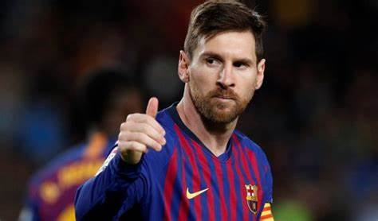
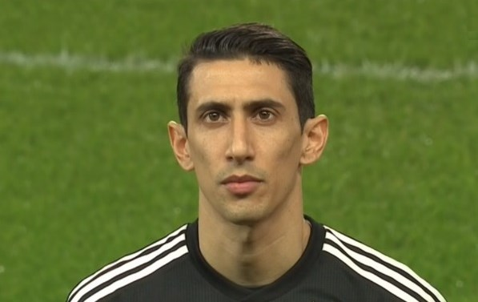
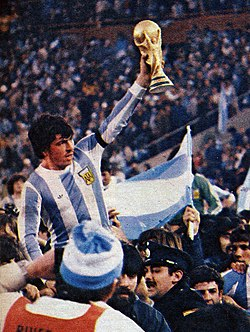
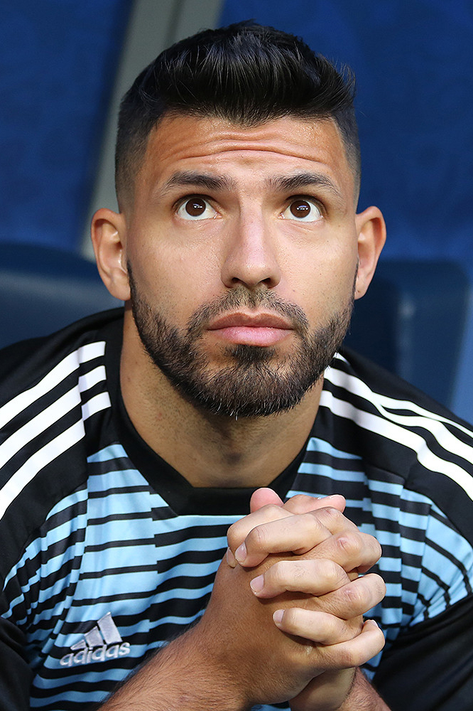

-  Lionel Andrés Messi
Lionel Andrés Messi born 24 June 1987 is an Argentine professional footballer who plays as a forward and captains both Spanish club Barcelona and the Argentina national team. Often considered the best player in the world and widely regarded as one of the greatest players of all time, Messi has won a record six Ballon d'Or awards,[note 2] and a record six European Golden Shoes. He has spent his entire professional career with Barcelona, where he has won a club-record 34 trophies, including ten La Liga titles, four UEFA Champions League titles and six Copas del Rey. A prolific goalscorer and creative playmaker, Messi holds the records for most goals in La Liga, a La Liga and European league season most hat-tricks in La Liga and the UEFA Champions League and most assists in La Liga, a La Liga and European league and the Copa América. He has scored over 700 senior career goals for club and country.
-  Ángel Fabián Di María
Ángel Fabián Di María; born 14 February 1988) is an Argentine professional footballer who plays for French Ligue 1 club Paris Saint-Germain and the Argentina national team. He can play as either a winger or attacking midfielder. After beginning his career with Rosario Central, Di María moved to Portugal in 2007 to play for Benfica, earning a €25 million move to Real Madrid three years later. He played a major role in the club's 2011–12 La Liga triumph. After winning the UEFA Champions League with Real Madrid, he signed for Manchester United in 2014 for a British record £59.7 million. After a difficult season at Old Trafford, Di María decided to join Paris Saint-Germain for around £44 million. A full international for Argentina since 2008, Di María has earned over 100 caps for his country. He scored the goal that won the country gold at the 2008 Olympics, and has also represented them at three FIFA World Cups and four Copa América tournaments, reaching the final of the 2014 World Cup, the 2015 Copa América, and the Copa América Centenario.
-  Daniel Alberto Passarella
Daniel Alberto Passarella (born 25 May 1953) is an Argentine former professional footballer who played as a centre back, and former manager of the Argentina and Uruguay national football teams. He was captain of the Argentina team that won the 1978 World Cup. He was president of the River Plate sports club for four years after winning the elections by a very close margin in December 2009. Considered one of the greatest defenders of all time Passarella was also a proficient goalscorer; at one point he was football's top scoring defender, with 134 goals in 451 matches,a record subsequently broken by Dutch defender Ronald Koeman.In 2004, Passarella was named one of the 125 Greatest Living Footballers at a FIFA Awards Ceremony.[5] In 2007, The Times placed him at number 36 in their list of the 50 hardest footballers in history.[6] In 2017 he has been included in the FourFourTwo list of the 100 all-time greatest players, at the 56th position.
-  Sergio Leonel Agüero
Sergio Leonel Agüero del Castillo; born 2 June 1988), colloquially known as Kun Agüero,is an Argentine professional footballer who plays as a striker for Premier League club Manchester City and the Argentine national team. He wears "Kun" on his shirt, a childhood nickname based on the title character from the cartoon Kum-Kum. He is widely considered as one of the best strikers of his generation and one of the best players in Premier League history.